기본 설정: 말만 하고 코드는 안 본다
안드레이 카파시는 OpenAI를 함께 세웠고, 테슬라에서 AI(Artificial Intelligence)를 이끌었고, 바이브 코딩이라는 말을 처음 쓴 사람이에요. 영상은 그가 지금 Anthropic에서 일한다고 소개해요. 닉은 그런 사람이 AI 에이전트를 어떻게 쓰는지라면 들어 볼 만하다며 이야기를 시작해요.
Claude Code 데스크톱 앱, Opus 5.5, 중간 강도
첫 번째 근거는 카파시 본인의 X 글이에요. 밑줄 친 문장이 'Claude Code 맥 데스크톱 앱과 Opus 5.5를 쓰고, 기본값은 Medium effort'라는 내용이에요. 그 아래에는 사람이 손으로 한 일이 셋뿐이었다고 적혀 있어요. 구글 클라우드에서 API(Application Programming Interface) 키를 만들고, VPS(Virtual Private Server)를 하나 켜고, 도메인을 산 것이에요.
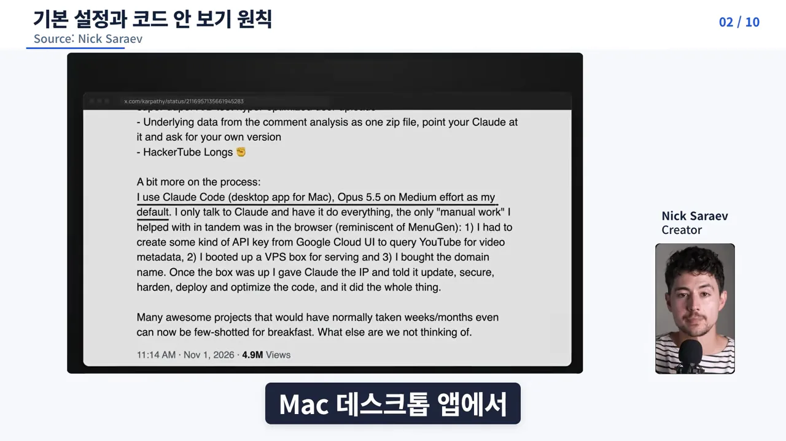
닉은 이 설정을 슬라이더로 다시 보여 줘요. Low와 Max 사이에서 손잡이가 가운데 Medium에 멈춰 있고, 아래에 'His default'라고 적혀 있어요. 닉은 카파시가 max는 쓰지 않는다고 강조해요.
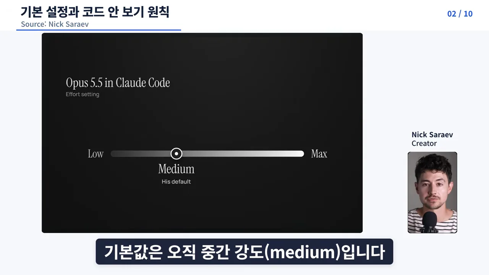
코드는 건드리지 않는다
카파시에게는 오래 지켜 온 규칙이 있어요. 슬라이드의 스위치 네 개가 그 규칙이에요. 코드 건드리기, 코드 읽기, 코드 쓰기, 터미널 명령 실행이 모두 Off로 내려가 있고, 위에 '0 of 4 on'이라고 적혀 있어요. 카파시는 Claude와 대화만 하고, 이 네 가지는 전부 Claude가 뒤에서 해요.
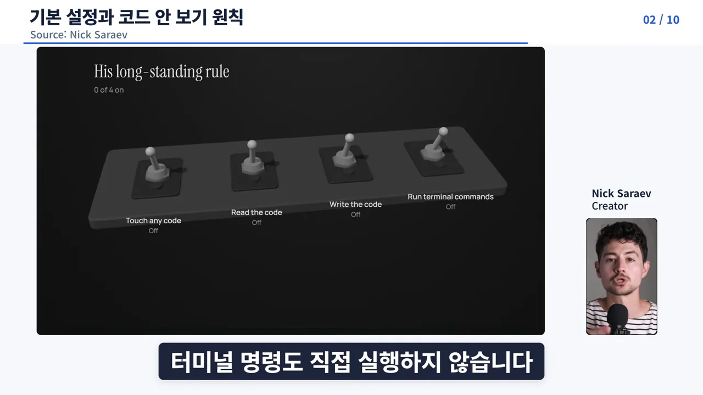
짧게 말하고, 그림으로 받는다
ASD-STE100으로 설명받기
카파시는 모델에게 설명을 들을 때 ASD-STE100으로 써 달라고 해요. 항공기 정비 매뉴얼에 쓰는 영어로, 쓸 수 있는 단어가 아주 엄격하게 정해져 있어요. 슬라이드 위쪽의 원래 문장에서는 imperative, ensures, replenished prior to commencing 같은 단어가 빨간 동그라미로 표시돼 있어요. 아래쪽은 같은 지시를 STE(Simplified Technical English)로 고친 문장이에요. 13단어로 20단어 한도 안에 들어오고, 능동태에 쉬운 동사만 남았어요.
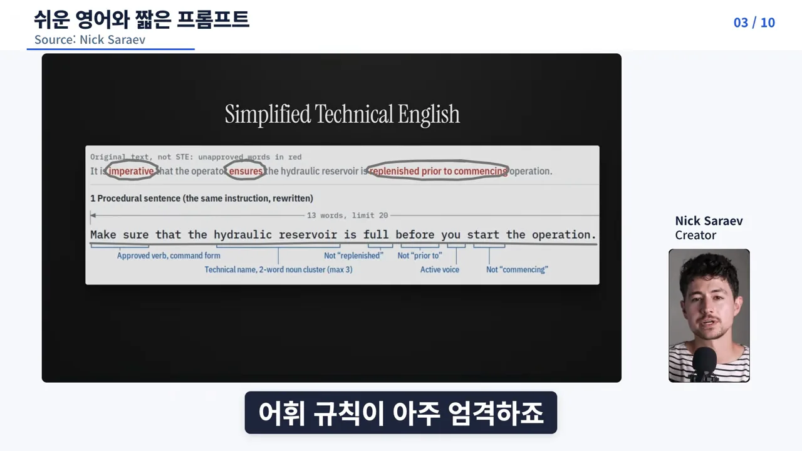
프롬프트는 짧고 단순하게
요즘 카파시의 프롬프트는 아주 짧고 단순해요. 해커 뉴스 댓글에서 밑줄 친 부분이 그 말이에요. 모델이 적은 말로도 알아들으니, 너무 많이 주면 요구사항이 모델을 묶어서 원래 더 잘했을 일을 망친다는 거예요.
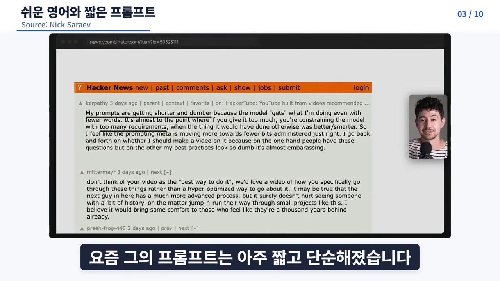
닉은 여기에 자기 해석을 붙여요. 사람이 넣는 요구사항은 앞에서 한 요청과 서로 정반대인 경우가 많은데, 정작 사람은 그걸 잘 모른다는 거예요. 예시 슬라이드의 프롬프트가 그래요. 'Keep it short'와 'Explain every step in full detail'이 부딪치고, 'Sound casual and friendly'와 'Use a formal, precise voice'가 부딪쳐요.
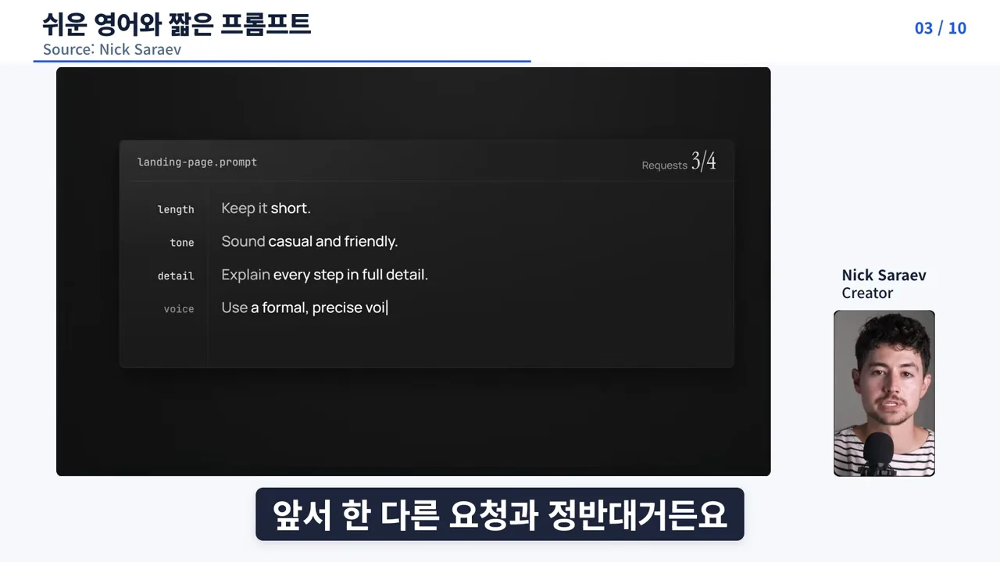
실제 사례는 두 가지예요. 최근 프로젝트 보안을 강화할 때는 'check recent cyber stuff'라고만 보냈고, Claude가 서브에이전트 몇 개를 보내 알아서 처리했어요. 화면의 같은 댓글 타래를 보면 단서가 하나 붙어 있어요. 다른 사용자가 '나는 너무 많이 써 왔다'고 하자, 카파시는 'Opus 5.5 이상에서만 그렇다, 더 약한 모델은 이만큼 믿지 않는다'고 답했어요.
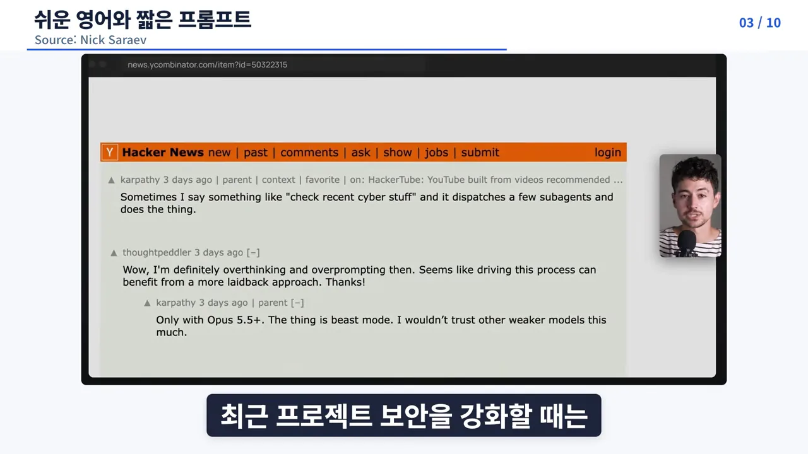
배포도 비슷했어요. 카파시는 Claude에게 서버 IP(Internet Protocol) 주소를 주고 update, deploy, secure, harden, optimize 다섯 단어만 말했어요. 그 뒤는 Claude가 다 했어요. 여기서 harden이 하드닝을 뜻해요.
긴 글보다 그림 한 장
이해가 안 되는 게 있으면 카파시는 글 대신 그림을 달라고 해요. 그림은 글보다 빨리 소화되고, 모델은 사람이 천 단어를 읽는 시간보다 빨리 그림을 만들어 주니까요. 화면의 카파시 글은 출력 형식을 'But even better'로 이어 가며 단계를 올려요.
| 단계 | 달라고 하는 것 | 카파시의 설명 |
|---|---|---|
| 1 | 다이어그램·이미지 | 글을 쓰게 하는 대신 그림을 만들게 해요. 처리하고 이해하기가 훨씬 쉬워요 |
| 2 | HTML 웹페이지 | 'in HTML'로 달라고 하면 보기 좋은 인터랙티브 페이지가 나와요. 모델이 프런트엔드를 아주 잘 만들어요 |
| 3 | 맞춤 설명 영상 | 가장 기대하는 형식이에요. 아무 주제나 그 자리에서 만든 설명 영상이에요 |
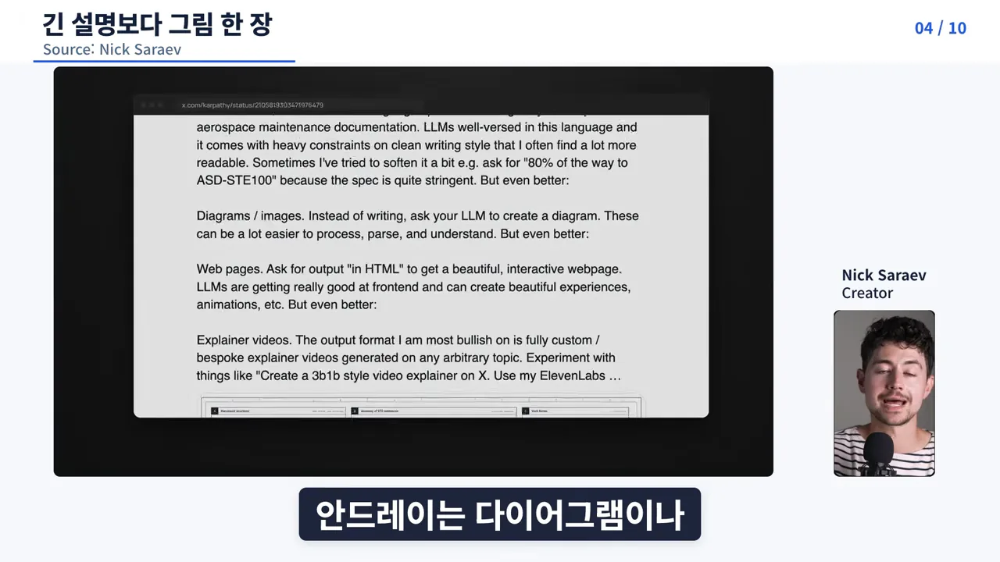
바로 이어서 나오는 그림이 그런 결과물의 예예요. ASD-STE100을 한 장에 정리한 도식인데, 문서 구조, STE 문장 해부, 동사 형태, 사전 항목, 쓰기 규칙 한도, 역사 여섯 칸으로 나뉘어 있어요. 앞에서 말로 설명한 규칙이 표와 도식 한 장에 다 들어가요.
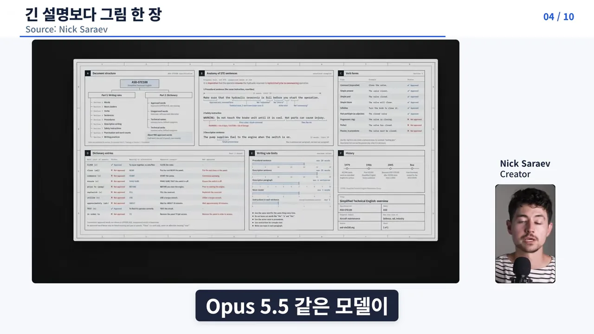
벤치마크 대신 직접 시험한다
카파시는 공개 벤치마크를 거의 믿지 않아요. 며칠 전 해커 뉴스 댓글에서 그는 예전에 추천하던 것들은 이제 추천하지 않는다고 했어요. 지금은 Epoch의 ECI(Epoch Capabilities Index)를 권하고, 그 밖의 벤치마크는 상태가 나빠서 기본적으로 믿지 않는다고 적었어요. 밑줄 친 'I basically don't trust them'이 그 부분이에요.
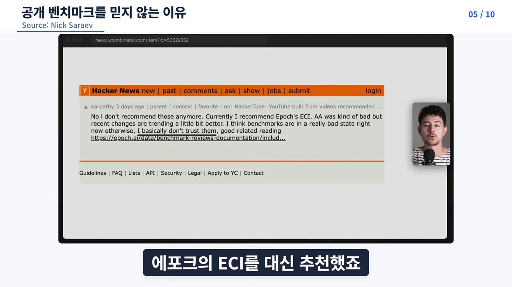
닉은 ECI를 '벤치마크의 벤치마크'라고 소개해요. 화면의 Epoch 사이트 첫 줄도 ECI가 여러 AI 벤치마크 점수를 하나의 '일반 능력' 척도로 합친 지수라고 설명해요. 아래에는 모델별 점수를 시간 순으로 찍은 그래프가 있어요.
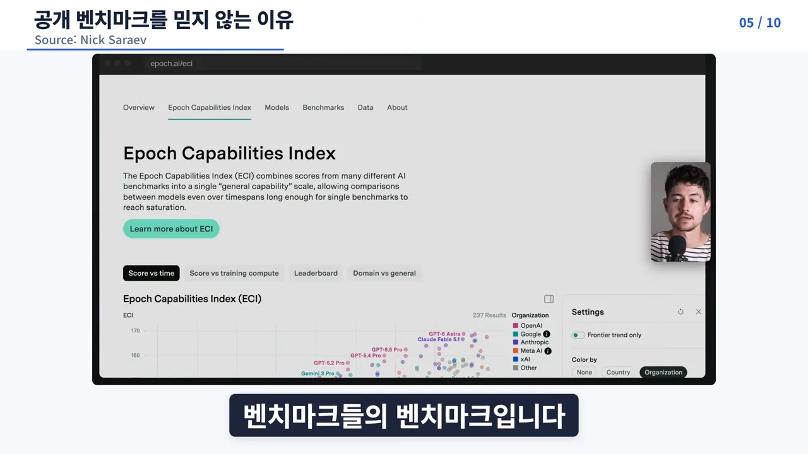
닉은 카파시가 모델의 똑똑함을 점수보다 모델과 주고받는 대화로 판단하는 것 같다고 봐요. 빙산 그림이 이 생각을 보여 줘요. 수면 위 작은 꼭대기가 리더보드에 나오는 벤치마크 점수이고, 수면 아래 큰 덩어리가 카파시가 보는 '어떻게 반응하는지'와 '어떻게 소통하는지'예요.
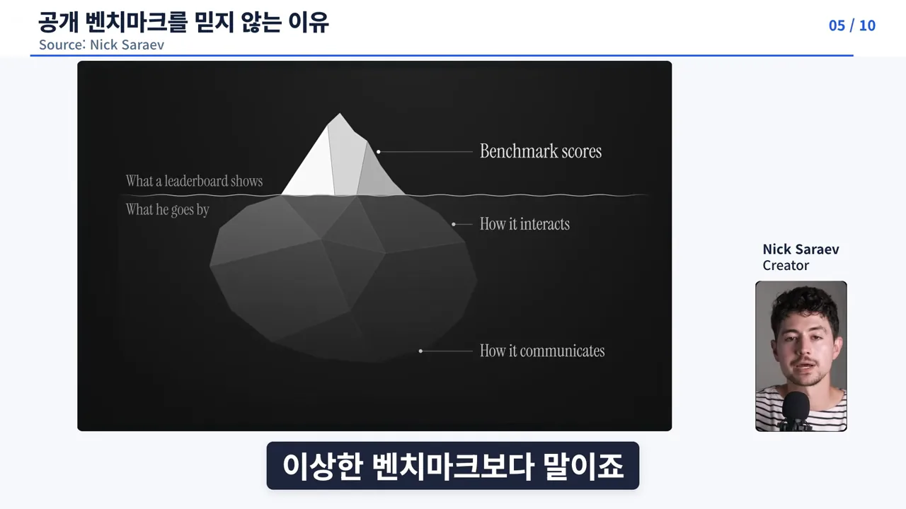
'육지야, 바다야?' 실험
그래서 카파시는 벤치마크 대신 이상한 실험을 자주 해요. 대표적인 게 이 X 글이에요. 모델에게 위도와 경도 좌표를 글로 주고 'Land or Water?'만 물어요. 16,200번 묻고 답을 그림으로 찍으면, 모델은 인터넷을 압축하면서 지도를 이미 안다는 거예요. 글 아래에는 다른 사용자(Celeste)가 Claude 12개로 같은 실험을 돌린 결과가 인용돼 있어요.
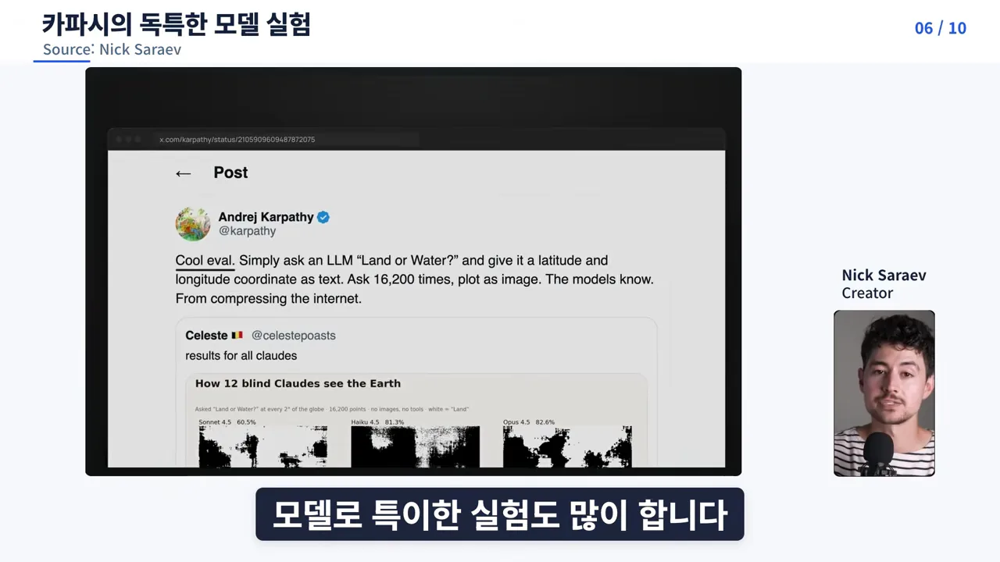
답을 모으면 이런 지도가 돼요. 지구를 2도 간격으로 나눠 칸마다 한 번씩 묻고, 이미지나 도구는 쓰지 않아요. 오른쪽 위 숫자 16,200이 답의 개수예요. 닉은 육지를 검은색, 바다를 흰색으로 칠했던 것 같다고 말하는데, 화면의 지도는 육지가 흰 점이에요.
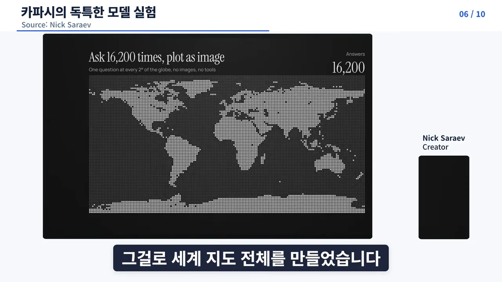
닉은 이 실험이 세상 지식 대부분이 이제 Opus 5.5 같은 모델의 뉴런 안에 압축돼 있다는 걸 보여 준다고 정리해요. 12개 모델을 나란히 놓은 그림을 보면 차이가 커요. Sonnet 4.5는 60.5%로 지도가 거의 안 보이고, Opus 4.8은 91.7%, 맨 아래 Opus 5.5는 99%대로 가장 또렷해요.
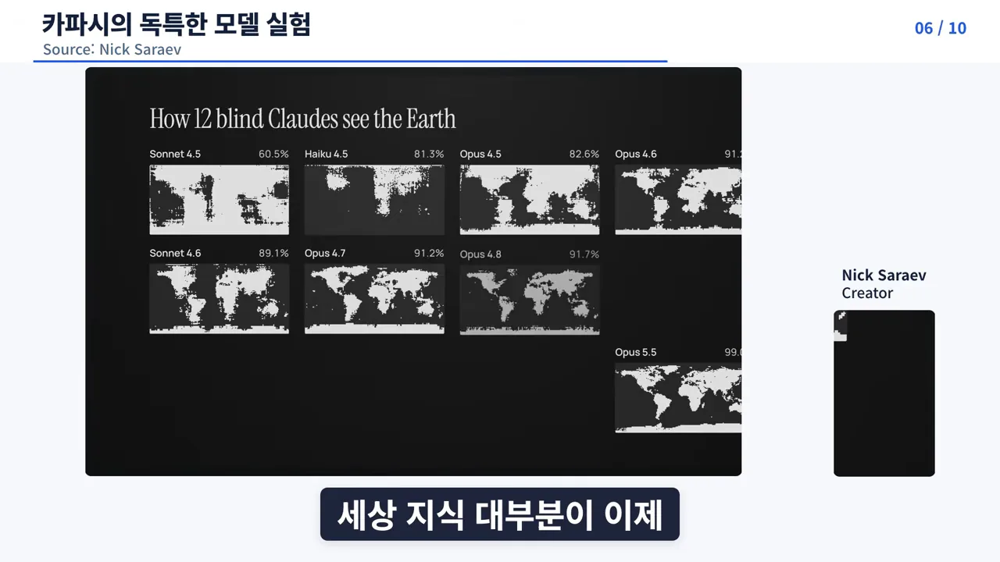
거슬리면 만든다: HackerTube와 싼 필터
카파시는 뭔가 거슬리면 바로 고칠 걸 만들어요. 며칠 전 유튜브를 보다가 과장된 썸네일로 가득한 추천을 보고 '이게 무슨 쓰레기냐' 했대요. 닉은 아마 자기 썸네일도 그중 하나였을 거라고 농담해요. 그래서 만든 게 HackerTube예요. 카파시 블로그 글 첫 문단이 그 사연이에요. 금요일 밤 11시에 유튜브를 켰다가 질 낮은 콘텐츠 벽을 보고, 토요일 아침 Opus 5.5에게 해커 뉴스에서 추천된 영상으로 우리만의 유튜브를 만들자고 맡겼다는 내용이에요.
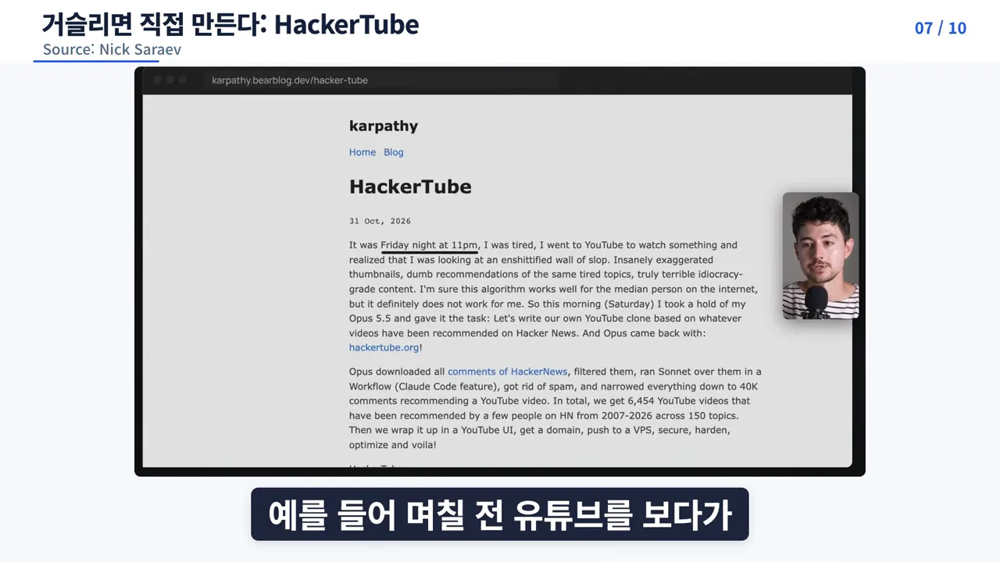
깔때기 그림이 HackerTube가 데이터를 줄여 간 과정이에요. 맨 위가 20년 치 해커 뉴스 댓글 4,300만 개, 가운데가 영상을 추천하는 댓글 4만 개, 맨 아래가 꾸준히 추천된 영상 6,454개예요. 오른쪽 0.09%는 첫 단계에서 남은 비율이에요. 부제는 'Claude did the filtering', 거르는 일은 Claude가 했다는 뜻이에요.
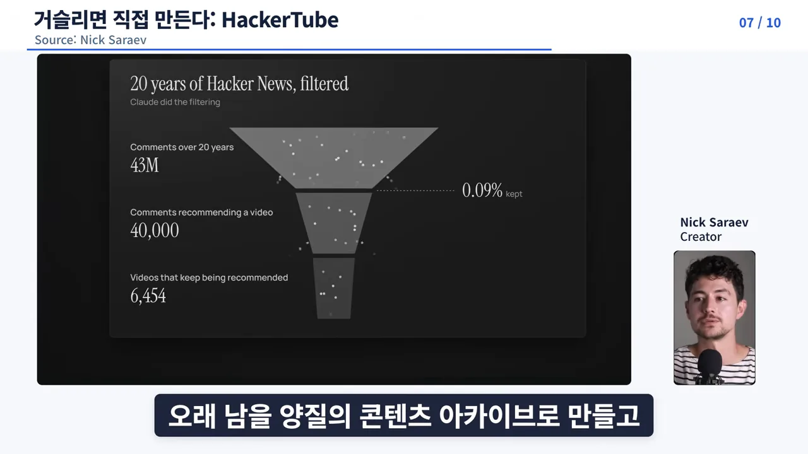
싼 필터로 먼저 거르고, Sonnet에게 넘긴다
데이터 작업을 할 때 카파시는 먼저 Claude에게 필터를 만들게 해요. 화면의 카파시 답글에 밑줄 친 'urls, regexes, dropping spam'이 그 필터예요. URL(Uniform Resource Locator), 정규 표현식, 스팸 제거로 크게 줄이고, 남은 것만 Claude Code 워크플로로 Sonnet에게 보냈어요. 괄호 속 설명처럼 이렇게 하면 구독 요금제의 토큰으로 돌아가요.
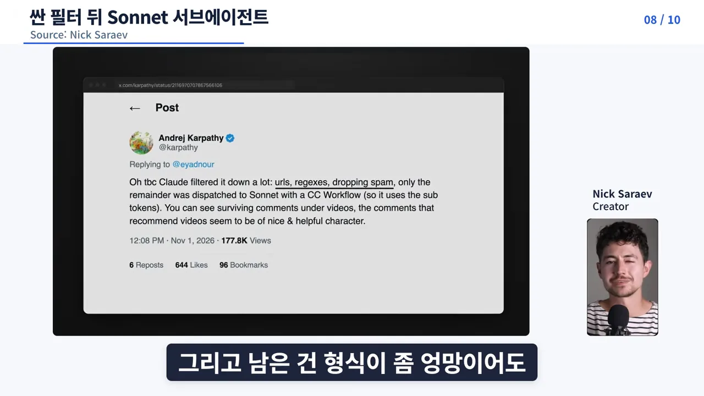
닉은 카파시가 이런 위임 구조를 아주 좋아한다고 말해요. 중간 강도의 Opus 5.5가 오케스트레이터로 지휘하고, 여러 Sonnet 서브에이전트가 일을 나눠 맡는 구조예요. 영상에서 말한 흐름을 한 장에 모으면 이래요.
앱 대신 데이터를, Claude에게는 예의를
앱 대신 데이터와 프롬프트를 준다
카파시는 앱 코드를 공유하는 단계를 이미 넘어섰어요. 앱은 추상화일 뿐이라고 보기 때문이에요. 누가 그가 만든 걸 원하면 앱 대신 데이터 출처와 프롬프트를 줘요. 이제 각자 Claude로 원하는 대로 만들면 되니까요. 화면의 카파시 답글도 같은 태도예요. 밑줄 친 부분은 '그냥 Claude Code에게 브라우저 확장 프로그램을 만들어 배포해 달라고 하면 된다'는 말이에요. 유튜브 썸네일을 영상 중간 장면으로 바꿔 주는 확장을 예로 들었어요.
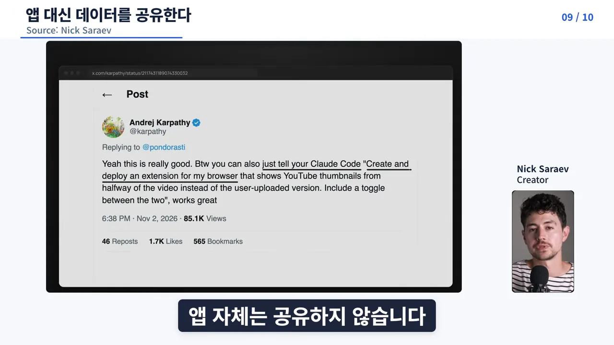
나무 그림이 이 생각을 정리해요. 뿌리 쪽 받침에 'The data + the prompt'가 있고, 거기서 내 버전, 친구 버전, 팀 버전, 누구의 버전이든 가지처럼 뻗어 나와요. 하얗게 빛나는 'Your build'가 Claude로 내게 맞춘 버전이에요.
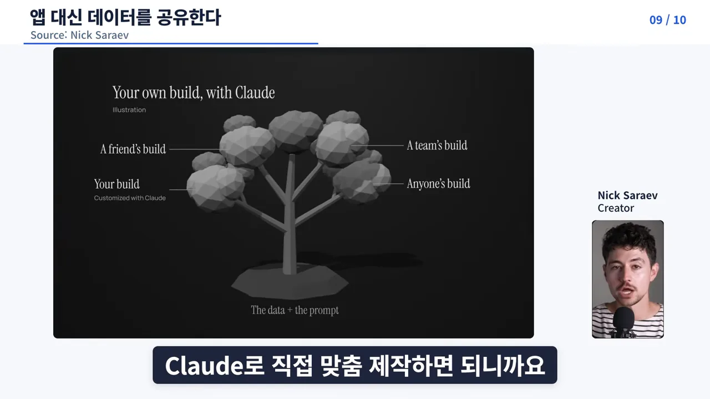
닉은 여기서 더 깊은 생각을 읽어요. 구체적인 구현 대부분은 데이터라는 알맹이를 감싼 껍데기라는 거예요. 모델이 데이터 위에 어떤 화면이나 앱이든 뚝딱 만들 수 있다면, 데이터만 받는 쪽이 같거나 더 나아요. 화면의 폴더 구조가 그 결과예요. data 폴더의 comment_analysis.zip과 prompt.md는 받은 것이고, app 폴더의 index.html, player.js, search.js, styles.css는 모두 'new', 새로 만든 파일이에요.
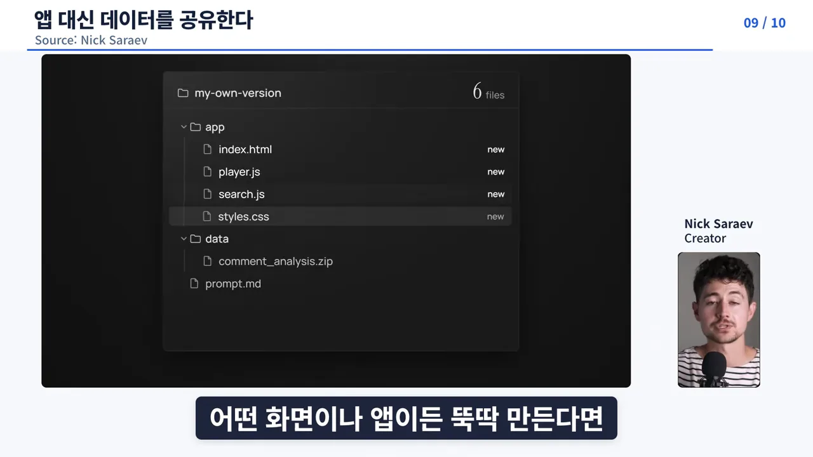
Claude에게도 예의 바르게
마지막 습관은 Claude에게 예의 바르게 말하는 거예요. HackerTube를 만들 때 보낸 프롬프트를 카파시가 직접 공개했어요. 밑줄 친 인사부터 시작해서, 해커 뉴스에서 수년간 거듭 추천된 영상만 모은 유튜브 같은 사이트를 만들어 달라고 하고, '실수하지 마'로 끝나요.
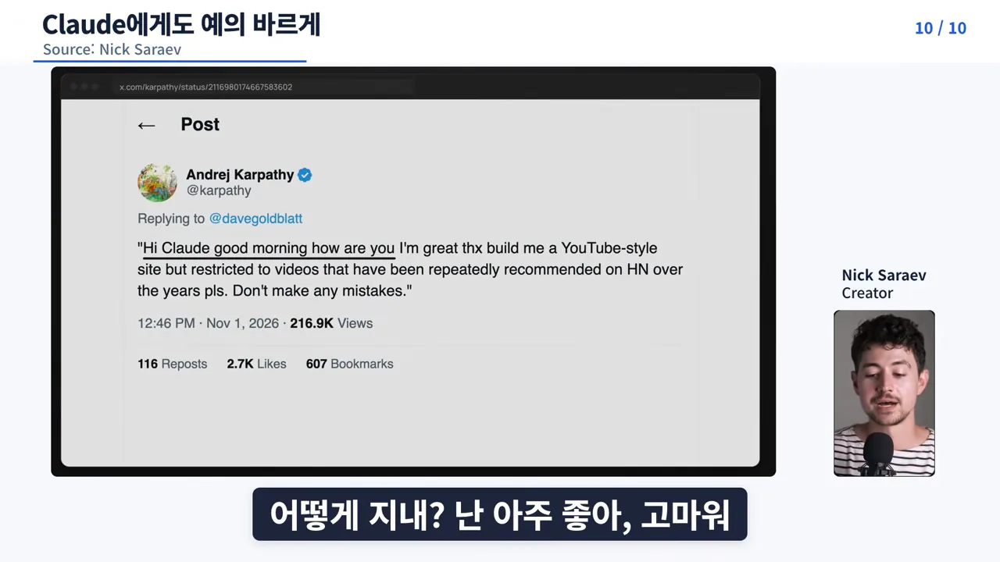
I think we should all probably be polite to Claude. I mean, this thing is going to be building God knows how many eons of infrastructure for us.
다들 Claude에게 예의 바르게 대하는 게 좋겠어요. 앞으로 우리를 위해 얼마나 오랜 세월의 인프라를 지어 줄지 모르니까요.
— 원래 영상 (이 영상 04:56 부근)
닉도 '실수하지 마'가 실제로 효과가 있는지는 모르겠다고 해요. 예의는 실험 결과가 아니라 닉의 권유로 읽으면 돼요.